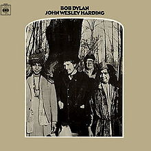

John Wesley Harding

Released: December 27, 1967
Length: 38:24
Producer: Bob Johnston
Label: Columbia
Side 1
John Wesley Harding
As I Went Out One Morning
I Dreamed I Saw St. Augustine
All Along the Watchtower
The Ballad of Frankie Lee and Judas Priest
Drifter's Escape
Side 2
Dear Landlord
I Am a Lonesome Hobo
I Pity the Poor Immigrant
The Wicked Messenger
Down along the Cove
I'll Be Your Baby Tonight